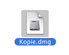
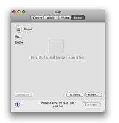
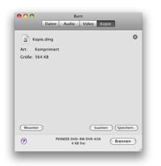
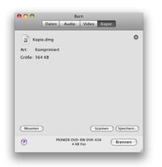

Discs kopieren:
Burn
kann Disk-Images verwenden. Diese Dateien repräsentieren eine
Disc. Man kann somit eine bereits existierende Disc kopieren.
Hinweis: Multi-Session-Discs können nicht kopiert
werden. Mit einer Ausahme: Audio-Discs (aber es sind keine 1:1 Kopien).
In Panther können nur cdr, toast, iso and sehr "einfache" cue/bin
Dateien gebrannt werden. Andere Formate kann man nutzen indem man diese
als Volume auf dem Desktop mounted und den Inhalt dann über Burn
abwirft.
1 Wähle eine Disc
(Image):
Wähle ein Disc-Image oder eine Disc die Du in Burn brennen willst.

2 Wirf das Image oder
die Disc in das Fenster
Wirf das Image (dmg, img, toast, iso, cdr, dvdr, cue/bin and TOC) oder
Disc in Burns Hauptfenster.
 

3 Klicke auf "Burn"
Es erscheint ein Dialog-Fenster.

4 Wähle "Optionen"
Wähle die Optionen für die Brennsitzung. Für mehr
Einstellungen siehe die "Einstellungen" unter dem Burn-Menu.

5 Brennen der Disc
Nun drücke auf "Burn" um die Disc zu brennen.

6 Burn
wird nun die Disc brennen
Während des Brennens wird ein Dialog angezeigt der über den
aktuellen Brennstatus Auskunft gibt.